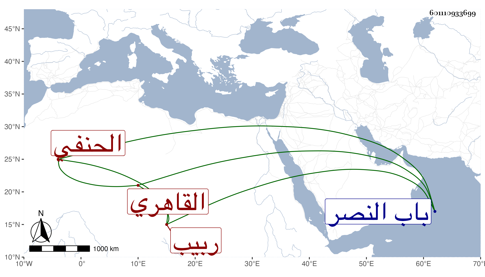

0902Sakhawi.DawLamic.ITO20230111-ara1.EIS1600.601110933699
Biography ID: 601110933699
45
محمد بن عبد الرحمن البدر أبو الفوز القاهري الحنفي ربيب الشمس الأمشاطي وهو بكنيته أشهر . مات في حياة أمه في المحرم سنة ست وسبعين وصلى عليه في مشهد حافل ثم دفن بتربتهم بالقرب من الروضة خارج باب النصر وقد زاد على الأربعين وكان موصوفا بعقل واحتمال وتواضع وفهم ، ممن اشتغل قليلا وحضر عند جماعة كزوج أمه وحج معهما في الرجبية وجلس للشهادة عند زوج أخته المظفر محمود الأمشاطي بل ناب في القضاء ويقال إنه حفظ النقاية رحمه الله .
